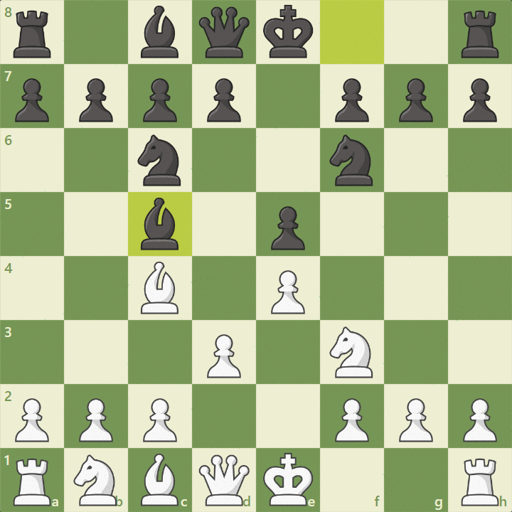

Jak robic dobre ruchy
Analiza ruchów w szachach może obejmować wiele różnych aspektów, w zależności od celu i poziomu zaawansowania. Oto kilka kroków, które mogą Ci pomóc w przeanalizowaniu ruchów w szachach:
Ocena pozycji: Zanim zaczniesz analizować konkretne ruchy, warto ocenić pozycję na planszy. Sprawdź, czy masz przewagę materiałową, czy twoje figury są lepiej rozmieszczone, czy Twojemu przeciwnikowi grożą jakieś zagrożenia, itp.
Analiza konkretnego ruchu: Przeanalizuj ruch, który chcesz wykonać lub który wykonał twój przeciwnik. Zastanów się, jakie są cele tego ruchu. Czy twój ruch atakuje jakąś figurę przeciwnika, czy może odpowiada na zagrożenie, czy też poprawia pozycję twoich własnych figur?
Konsekwencje ruchu: Zastanów się, jakie mogą być następstwa ruchu. Czy istnieją jakieś potencjalne odpowiedzi przeciwnika? Jakie są długoterminowe konsekwencje tego ruchu dla pozycji na planszy?
Warianty: Rozważ różne warianty, które mogą wyniknąć z danego ruchu. Spróbuj przewidzieć, jak może ewoluować pozycja w odpowiedzi na różne scenariusze.
Analiza taktyczna: Szukaj kombinacji taktycznych, które mogą się pojawić po danym ruchu. Czy istnieją możliwości uderzenia lub kombinacji, które mogą zaskoczyć przeciwnika?
Planowanie strategiczne: Zastanów się, czy dany ruch pasuje do Twojego ogólnego planu strategicznego. Czy pomaga w realizacji Twoich celów na planszy?
Sprawdzenie alternatyw: Przeanalizuj inne możliwe ruchy, które mógłbyś wykonać zamiast tego, który zastanawiasz się nad wykonaniem. Czy istnieją lepsze opcje?
Wykorzystanie silnika szachowego: Jeśli masz dostęp do komputera z programem do analizy szachowej, PO ZAKOŃCZENIU PARTII możesz skorzystać z silnika szachowego, aby uzyskać obiektywne oceny i sugestie dotyczące ruchów.
Analiza partii: Jeśli analizujesz partię po jej zakończeniu, przejrzyj całą partię, aby zrozumieć rozwój wydarzeń i zidentyfikować kluczowe momenty oraz błędy.
Analiza ruchów w szachach to proces, który wymaga cierpliwości, kreatywności i strategicznego myślenia. Im więcej praktykujesz, tym lepiej będziesz w stanie oceniać pozycje i podejmować trafne decyzje na planszy.
